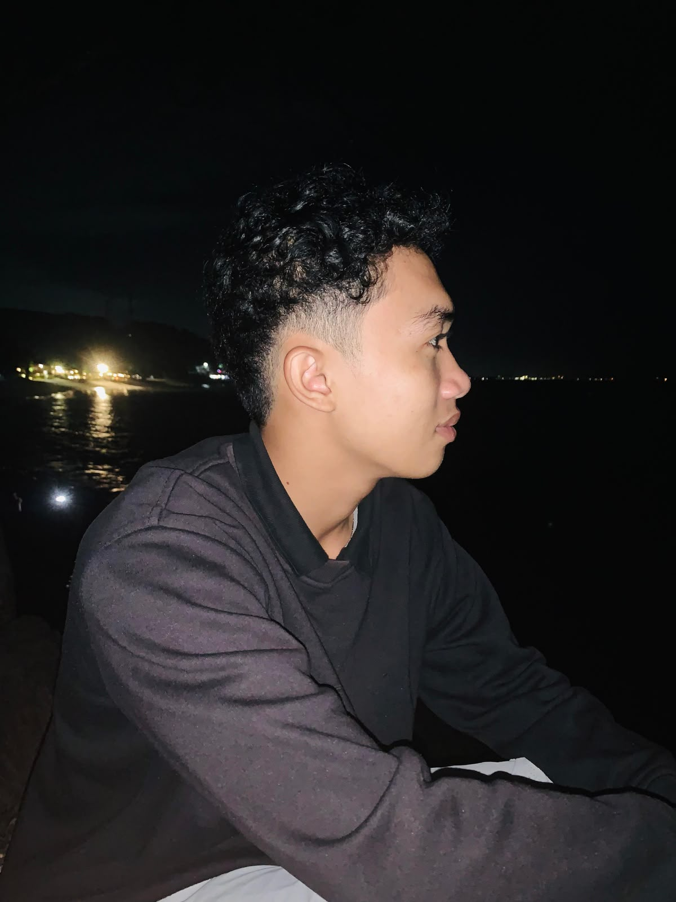

UNIVERSITAS PENDIDIKAN MANDALIKA
Mataram, Nusa Tenggara Barat

IRFAN SANDI
PENDIDIKAN TEKNOLOGI INFORMASI
👨💻 Tentang Saya
Nama saya Irfan Sandi. Saya adalah mahasiswa Program Studi Pendidikan Teknologi Informasi. Saya tertarik pada teknologi, pemrograman, dan pengembangan website.
Saya senang mempelajari hal-hal baru, mengembangkan kemampuan di bidang teknologi informasi, dan terus belajar untuk menjadi pribadi yang lebih baik.
📧 Email:
sandi070506@gmail.com